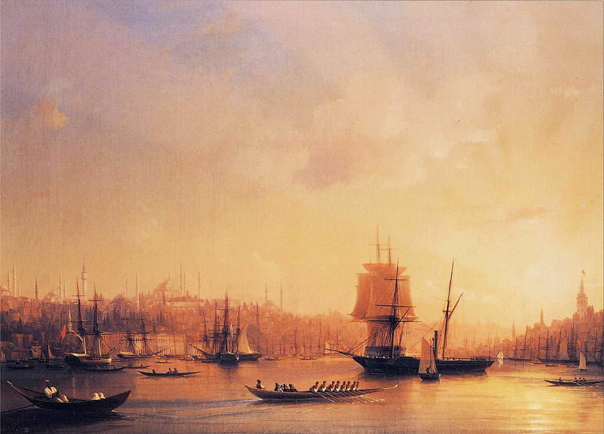
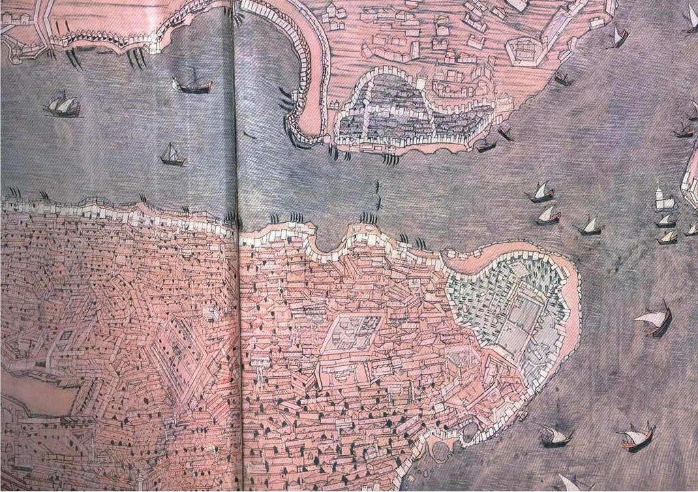

Разведка и контразведка в период Лепанто
И лишь о сыне, ренегате,
Всю ночь безумно плачет мать,
Да шлет отец врагу проклятье
(Ведь старым нечего терять!.. )
А. А. Блок. Возмездие
В комментариях к предыдущим постам о деятельности испанских спецслужб против Османской империи закономерно возник вопрос: а что османы, предпринимали ли они меры против разведки Габсбургов, и если да – то насколько эффективны были эти меры?
Сразу скажем, что конечно же турки имели достаточно дееспособные контрразведывательные службы, серьезно затруднявшие деятельность испанских разведчиков и агентов.

Айвазовский. Закат над Золотым Рогом. 1845. Каталог Christie’s.
Существовал действенный мониторинг внешних границ империи. На регулярной основе осуществлялось патрулирование основных транспортных коммуникаций с целью проверки личности подозрительных путешественников. Велось профилактическое наблюдение за потенциально опасными для империи группами населения, которые могли стать участниками «пятой колонны», действующей в интересах противника. В первую очередь это были ренегаты, занимавшие ответственные посты в турецкой политической и военной администрации, иностранные купцы, члены посольских миссий, паломники к святым местам. Велся тщательный контроль за входящей и исходящей корреспонденцией. И, наконец, в интересах контршпионажа внедрялись собственные агенты в разведывательные организации противника.
Выявленных шпионов и агентов разведки Габсбургов не спешили ликвидировать, как это можно было предполагать, а использовали для дезинформации противника. И надо сказать, что добивались своей цели. Они наводнили разведывательные органы Испании множеством писем, якобы подписанных султаном. На действительных сообщениях турецких корреспондентов ставились другие даты, что делало невозможным давать на их основе объективную оценку обстановки. Габсбургская разведка получала такой поток противоречивой информации, что порой неспособной оказывалась сделать на ее основе заключения, полезные для принятия ответственных политических и военных решений. В этих условиях даже ценная, добытая с больших трудом информация становилась бесполезной. Один из испанских аналитиков, вконец запутавшись, сказал в сердцах об агентах своей разведки: «Лучше бы их совсем не было».
И все же, несмотря на столь жесткое противостояние турецкой контрразведки, на отчаяние аналитиков, испанской разведке, как было показано выше, удавалось добиваться неплохих результатов. Несла ли она при этом потери? Несомненно. Первая массовая казнь разоблаченных испанских агентов из числа работавших в Арсенале ренегатов (их живыми посадили на кол) состоялась в 1570 году. Большую группу ренегатов, поставлявших информацию Дону Хуану Австрийскому, казнили после продолжительных пыток в 1573 году. Одиночные казни шпионов происходили на протяжении всего этого периода. Однако, надо отметить, что не все разоблаченные агенты подвергались казни. Конечно же, многие арестованные шпионы были направлены на галеры. Значительное число их было освобождено за выкуп. Некоторые из агентов-христиан сохранили свои жизни благодаря обращению в ислам.
Рассказывая о деятельности разведывательной сети Габсбургов в Османской империи, мы до настоящего времени говорили в основном о добывании информации. Но был и другой вид разведывательной деятельности, которую вели испанцы, – подготовка и проведение специальных операций, в основном актов диверсий и саботажа. Особое внимание этой деятельности уделялось накануне и во время войны 1570-1573 гг. Был разработан специальных план, предусматривающий поджог Арсенала, подкуп капитанов галер с целью вывода их из боя в случае военного конфликта и подготовка гребцов военных галер к организованному бунту.

Карта турецкого Арсенала, XVI век.
Далеко не все из намеченных планов удалось осуществить. Известна неудачная попытка поджога Арсенала, имевшая место 27 декабря 1570 года. Завербованный испанцами корсиканец Сулейман Бей сумел привлечь сообщника – 20-летнего раба-киприота, который работал мастером в канатном цеху арсенала (в обмен на обещанное возвращение на родину после проведения акции). Дождавшись благоприятного ветра, в полночь заговорщики подожгли пеньку в цеху и закрыли все двери. Но поскольку пенька оказалась сырой, огонь распространялся слишком медленно, зато дым валил во все стороны. Он привлек внимание охраны на входе, которая подняла тревогу. Прибыл Адмирал флота, который учинил немедленное расследование, корсиканец и его сообщник были тут же вычислены, арестованы и подвергнуты пыткам. В итоге киприота посадили на кол, корсиканцу же удалось бежать. Диверсант направился в Неаполь в надежде получить там вознаграждение от своих хозяев, но был пойман османами и казнен.
После этого инцидента христианам под страхом смерти было запрещено подходить к зданиям Арсенала. На каждую галеру было назначено три специальных охранника для предотвращения диверсий.
Руководитель испанской разведсети в Османской империи Рензо с началом войны между Венецией и османами оказался в Рагузе, на пути своей очередной поездки в Константинополь. Он тут же предложил свои услуги венецианским руководителям, обещая организовать диверсии в турецких крепостях и на галерах турецкого флота. Совет Десяти Светлейшей согласился рассмотреть предложения Рензо и дал указание Капитан-генералу венецианского флота провести с ним встречу для разработки конкретного плана. Для его осуществления были выделены деньги и необходимое материальное обеспечение, в том числе взрывчатка. Но планам этим, как и многим другим предприятиям Рензо, не суждено было сбыться. После победы при Лепанто венецианцы отказались от их осуществления. Впрочем, Рензо утверждал впоследствии, что деятельность его агентов на турецких галерах во время сражения при Лепанто привела к тому, что 60 из них так и не смогли открыть огонь по кораблям Священной Лиги.
В деятельности испанской разведки особое место занимает операция против Улудж Али, которую она проводила на протяжении нескольких лет. О ней мы расскажем в следующий раз.